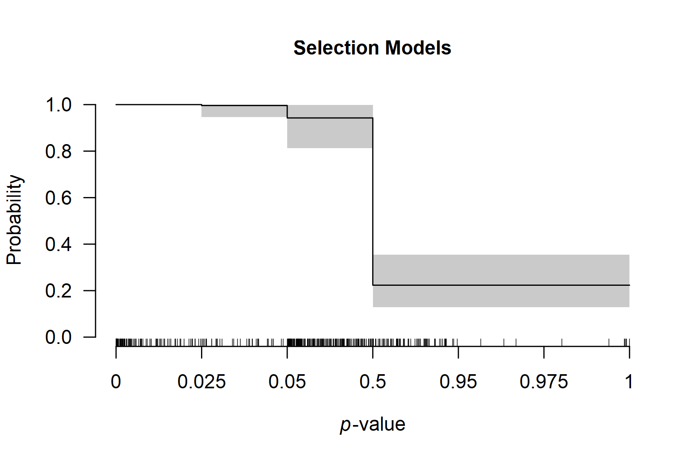

Multilevel Robust Bayesian Meta-Analysis
František Bartoš
17th of December 2025 (updated: 29th of April 2026)
Source:vignettes/32-robma-multilevel.Rmd
32-robma-multilevel.RmdThis vignette accompanies the manuscript Robust Bayesian Multilevel Meta-Analysis: Adjusting for Publication Bias in the Presence of Dependent Effect Sizes preprinted at PsyArXiv (Bartoš et al., 2026).
This vignette reproduces the first example from the manuscript. For multilevel meta-regression with moderators, see the Multilevel Robust Bayesian Model-Averaged Meta-Regression vignette.
Multilevel Robust Bayesian Meta-Analysis (RoBMA) extends the standard RoBMA framework to datasets containing multiple effect sizes from the same studies. We demonstrate the method using data from Johnides et al. (2025), who meta-analyzed 412 effect sizes from 128 studies investigating secondary benefits of family-based treatments for childhood disorders.
When to Use Multilevel RoBMA
Multilevel RoBMA is appropriate for datasets that contain multiple
effect sizes from the same studies. The multilevel approach explicitly
models the clustering structure through the cluster
argument, which:
- accounts for dependencies among effect sizes from the same study,
- partitions heterogeneity into within-study and between-study components,
- simultaneously adjusts for publication bias at the study level (corresponding to selective reporting).
Loading the Data
We load the package and examine the dataset structure.
The dataset contains effect sizes (d), standard errors
(se), and study identifiers (study).
head(Johnides2025)
#> study d se
#> 1 Price et al. (2012) 0.0000 0.1337909
#> 2 Price et al. (2012) -0.1250 0.1337909
#> 3 Price et al. (2012) 0.0000 0.1337909
#> 4 Price et al. (2012) 0.2112 0.1337909
#> 5 Price et al. (2012) 0.0140 0.1337909
#> 6 Price et al. (2012) -0.0186 0.1337909Multiple rows share the same study name, indicating that these effect sizes come from the same study. For example, the first five effect sizes are from “Price et al. (2012)” and might be more similar to each other than to effect sizes from other studies.
Prior Distributions
To reproduce the RoBMA 3.6.1 version results, which used a different prior distribution formulation and scaling settings, we need to specify the prior distributions manually (see the Prior Distributions vignette for more details on specifying prior distributions).
Fitting the Multilevel Model
We specify the effect sizes as yi and standard errors as
sei argument. Setting measure = "SMD"
specifies that we are using standardized mean differences as the
effect-size input, which is important for the prior distribution
specification (here the effect size and heterogeneity prior
distributions are specified explicitly since they differ from the
default specification in the 3.6.1 version; the publication-bias
specification remains the same). The cluster argument
specifies which effect sizes belong together.
fit <- RoBMA(
yi = d, sei = se, measure = "SMD", cluster = study,
prior_effect = prior_effect_361,
prior_heterogeneity = prior_heterogeneity_361,
adapt = 5000, burnin = 5000, sample = 10000,
parallel = TRUE, seed = 1, data = Johnides2025
)Note: This model takes 10-15 minutes with parallel processing enabled. Without parallel processing, expect over an hour.
Interpreting the Results
The summary() output contains two main sections.
summary(fit)
#>
#> Robust Bayesian Model-Averaged Multilevel Random-Effects Model (k = 412, clusters = 128)
#>
#> Component Inclusion
#> Prior prob. Post. prob. Inclusion BF error%(Inclusion BF)
#> Effect 0.500 0.749 2.990 11.031
#> Heterogeneity 0.500 1.000 >29999.000 NA
#> Publication Bias 0.500 1.000 >29999.000 NA
#>
#> Estimates
#> Mean SD 0.025 0.5 0.975 error(MCMC) error(MCMC)/SD ESS R-hat
#> mu 0.088 0.063 0.000 0.100 0.193 0.00253 0.040 611 1.006
#> tau 0.386 0.034 0.323 0.385 0.455 0.00073 0.021 2189 1.002
#> rho 0.497 0.080 0.334 0.500 0.645 0.00156 0.020 2638 1.001
#>
#> Publication Bias
#> Mean SD 0.025 0.5 0.975 error(MCMC) error(MCMC)/SD ESS R-hat
#> omega[0,0.025] 1.000 0.000 1.000 1.000 1.000 NA NA NA NA
#> omega[0.025,0.05] 0.996 0.016 0.947 1.000 1.000 0.00059 0.037 714 1.029
#> omega[0.05,0.5] 0.943 0.050 0.813 0.957 0.998 0.00077 0.015 4500 1.000
#> omega[0.5,0.95] 0.223 0.060 0.128 0.217 0.355 0.00161 0.027 1386 1.004
#> omega[0.95,0.975] 0.223 0.060 0.128 0.217 0.355 0.00161 0.027 1386 1.004
#> omega[0.975,1] 0.223 0.060 0.128 0.217 0.355 0.00161 0.027 1386 1.004
#> PET 0.000 0.000 0.000 0.000 0.000 0.00000 NA 0 NA
#> PEESE 0.000 0.000 0.000 0.000 0.000 0.00000 NA 0 NA
#> P-value intervals for publication bias weights omega correspond to one-sided p-values.Components Summary
This table shows Bayes factors testing the presence of effect, heterogeneity, and publication bias. Each row displays the prior probability, posterior probability after observing the data, and the inclusion Bayes factor comparing models with versus without that component.
In our example, the inclusion BF for the effect is 0.927, indicating
weak evidence against an effect. The inclusion BF for heterogeneity and
publication bias are reported as Inf, i.e., beyond the
numerical precision of the estimation algorithm (> 10⁶), indicating
extreme evidence for both components.
We also notice a warning about the effective sample size (ESS) being below the set target. The difference is, however, not substantial, and we can safely ignore it.
Model-Averaged Estimates
This section provides meta-analytic estimates averaged across all
models, weighted by their posterior probabilities. The average effect
size is mu, the overall heterogeneity is tau,
and the heterogeneity allocation parameter is rho. The
heterogeneity allocation parameter rho indicates the
proportion of heterogeneity allocated to the cluster-level component:
rho = 0 means all heterogeneity is within clusters,
rho = 1 means all heterogeneity is between clusters, and
rho = 0.5 means equal split. The remaining parameters
summarize the weight function and PET/PEESE regression for publication
bias.
In our example, we find a small effect size (d = 0.050, 95%
CI [0.000, 0.173]), substantial heterogeneity (τ = 0.40, 95% CI [0.348,
0.458]), and nearly balanced heterogeneity allocation (ρ = 0.461, 95% CI
[0.306, 0.603]). The large heterogeneity combined with the small pooled
effect suggests substantial variation in true effects. This distribution
of true effect sizes can be obtained from the
summary_heterogeneity() function:
summary_heterogeneity(fit)
#>
#> Heterogeneity Estimates:
#> Mean Median 0.025 0.975
#> tau 0.386 0.385 0.323 0.455
#> rho 0.497 0.500 0.334 0.645
#> tau [within] 0.273 0.272 0.219 0.331
#> tau [between] 0.272 0.270 0.205 0.347
#> tau2 0.150 0.148 0.105 0.207
#> tau2 [within] 0.075 0.074 0.048 0.110
#> tau2 [between] 0.075 0.073 0.042 0.120
#> I2 84.691 84.841 79.795 88.680
#> I2 [within] 42.585 42.301 30.352 56.249
#> I2 [between] 42.106 42.230 27.900 55.548
#> H2 6.678 6.597 4.949 8.834The wide prediction interval (d = -0.752 to 0.845) quantifies the degree of this heterogeneity: some studies may show benefits while others show harm.
Model Types Summary
To understand which publication bias mechanisms the data support, we examine the posterior distribution across model types:
summary_models(fit)
#>
#> Effect
#> Hypothesis Prior prob. Post. prob. Inclusion BF error%(Inclusion BF)
#> Spike(0) Null 0.500 0.251 0.334 11.031
#> Normal(0, 0.5) Alternative 0.500 0.749 2.990 11.031
#>
#> Heterogeneity
#> Hypothesis Prior prob. Post. prob. Inclusion BF error%(Inclusion BF)
#> Spike(0) Null 0.500 0.000 0.000 NA
#> InvGamma(1, 0.07) Alternative 0.500 1.000 Inf NA
#>
#> Publication Bias
#> Hypothesis Prior prob. Post. prob. Inclusion BF error%(Inclusion BF)
#> None Null 0.500 0.000 0.000 NA
#> omega[two-sided: .05] Alternative 0.042 0.000 0.000 NA
#> omega[two-sided: .05, .1] Alternative 0.042 0.000 0.000 NA
#> omega[one-sided: .05] Alternative 0.042 0.000 0.000 NA
#> omega[one-sided: .025, .05] Alternative 0.042 0.000 0.000 NA
#> omega[one-sided: .05, .5] Alternative 0.042 0.891 188.268 18.769
#> omega[one-sided: .025, .05, .5] Alternative 0.042 0.109 2.810 18.769
#> PET Alternative 0.125 0.000 0.000 NA
#> PEESE Alternative 0.125 0.000 0.000 NAEssentially all of the posterior probability is allocated to selection models (weight functions). The publication-bias adjustment therefore reflects selective reporting rather than small-study effects (PET/PEESE regression); specifically, one-sided selection operating on marginally significant p-values and on the direction of the effect.
Visualizing the Weight Function
The weight function shows how publication probability varies across p-value ranges:
plot_weightfunction(fit)
The plot displays one-sided p-value cutoffs (x-axis) against relative publication probability (y-axis), averaged across weight function specifications. A flat line at 1.0 indicates no publication bias; values below 1.0 indicate suppression.
In our example, we notice a small drop in the relative publication probability at the cutoff corresponding to p = 0.05 (one-sided, i.e., 0.10 two-sided: selection on marginally significant p-values) and a much sharper drop corresponding to the direction of the effect (p = 0.50).
Comparison with Single-Level RoBMA
To understand the importance of accounting for nested structure, we compare our results with a standard single-level RoBMA that ignores dependencies among effect sizes from the same study.
fit_simple <- RoBMA(
yi = d, sei = se, measure = "SMD",
prior_effect = prior_effect_361,
prior_heterogeneity = prior_heterogeneity_361,
adapt = 5000, burnin = 5000, sample = 10000,
parallel = TRUE, seed = 1, data = Johnides2025
)
summary(fit_simple)
#>
#> Robust Bayesian Model-Averaged Random-Effects Model (k = 412)
#>
#> Component Inclusion
#> Prior prob. Post. prob. Inclusion BF error%(Inclusion BF)
#> Effect 0.500 0.104 0.117 4.448
#> Heterogeneity 0.500 1.000 >29999.000 NA
#> Publication Bias 0.500 1.000 >29999.000 NA
#>
#> Estimates
#> Mean SD 0.025 0.5 0.975 error(MCMC) error(MCMC)/SD ESS R-hat
#> mu 0.003 0.017 -0.001 0.000 0.059 0.00025 0.015 4563 1.003
#> tau 0.371 0.022 0.328 0.370 0.414 0.00019 0.009 12787 1.000
#>
#> Publication Bias
#> Mean SD 0.025 0.5 0.975 error(MCMC) error(MCMC)/SD ESS R-hat
#> omega[0,0.025] 1.000 0.000 1.000 1.000 1.000 NA NA NA NA
#> omega[0.025,0.05] 0.998 0.011 0.969 1.000 1.000 0.00047 0.042 595 1.008
#> omega[0.05,0.5] 0.951 0.043 0.840 0.963 0.999 0.00054 0.013 6433 1.000
#> omega[0.5,0.95] 0.224 0.035 0.168 0.221 0.299 0.00039 0.011 8618 1.006
#> omega[0.95,0.975] 0.224 0.035 0.168 0.221 0.299 0.00039 0.011 8618 1.006
#> omega[0.975,1] 0.224 0.035 0.168 0.221 0.299 0.00039 0.011 8618 1.006
#> PET 0.000 0.000 0.000 0.000 0.000 0.00000 NA 0 NA
#> PEESE 0.000 0.038 0.000 0.000 0.000 0.00049 0.013 1974 1.291
#> P-value intervals for publication bias weights omega correspond to one-sided p-values.The single-level model differs by:
- omitting
cluster: it treats all effect sizes as independent, - estimating only one heterogeneity parameter: it cannot distinguish within-study from between-study variation,
- potentially biased inference: ignoring dependencies can lead to overconfident conclusions.
For the Johnides et al. data, the single-level RoBMA finds strong evidence for the absence of an effect, while the multilevel model provides only weak evidence against it. Properly accounting for data structure leads to more conservative and appropriate inferences.